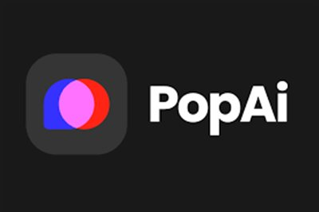
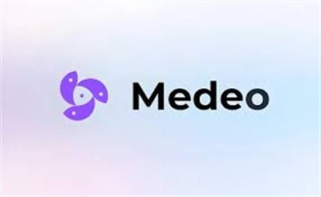
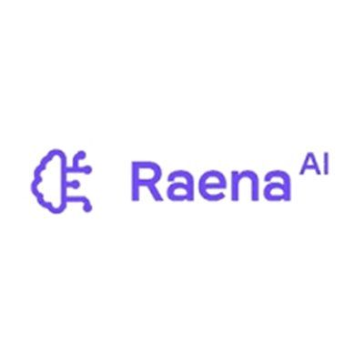

Best AI Marketing Tools 2026 – Top 10 Tested
The best AI marketing tools in 2026 can automate social media, write SEO content, run Facebook ads, and manage customer support — all without a large team. Whether you're an agency, a startup, or a solo marketer, these AI marketing tools will help you create faster, convert better, and grow smarter. Every tool on this list is hands-on tested and reviewed by the WebTools team.
Moose (Hi, Moose)
FreemiumAI content optimization for next-gen SEO including ChatGPT, Perplexity, and AI Overviews. Structures content for AI citation and provides SEO briefs and FAQ generation.
Try Moose →
PagerGPT
FreemiumNo-code platform to build AI chatbots trained on your own data. Automate customer support and sales conversations across websites and SaaS platforms.
Try PagerGPT →
Ocoya
FreemiumSocial media management platform that combines AI content creation, scheduling, and analytics. Generate posts, visuals, and automate multi-platform publishing.
Try Ocoya →
GetGenie AI
FreemiumWordPress AI assistant for SEO-optimized content. Writes blogs, product descriptions, and meta tags inside the WordPress editor with competitor analysis built in.
Try GetGenie →Tweet Hunter
FreemiumTwitter (X) growth tool for writing high-performing posts, analyzing viral content, and building an engaged audience. Includes scheduling, CRM, and analytics.
Try Tweet Hunter →
ThumbnailTest
FreemiumAnalyzes and optimizes YouTube thumbnails using attention simulation and A/B testing. Maximize your click-through rate before you publish any video.
Try ThumbnailTest →
Chative.io
FreemiumCustomer support platform combining live chat and AI chatbots for 24/7 automated responses. Integrates with your website, knowledge base, and e-commerce systems.
Try Chative →
Dropmagic
FreemiumAI-powered dropshipping tool for finding profitable products and analyzing market trends. Automates product research, ad creation, and store optimization.
Try Dropmagic →
Caimera
FreemiumAI product visual and ad creative generator — no photoshoots needed. Create scalable marketing campaigns and product images for social and e-commerce.
Try Caimera →
Trycrush AI
FreemiumAutomates Facebook advertising campaigns using AI — ad creation, copywriting, and campaign optimization with minimal manual input. Improve ROI through automated testing.
Try Trycrush →Frequently Asked Questions – AI Marketing Tools
What is the best AI tool for social media marketing?
Ocoya is the top pick for social media management, combining AI content writing, scheduling, and analytics in one platform. Tweet Hunter is best specifically for growing on X (Twitter).
Which AI tool writes SEO content automatically?
GetGenie AI and Moose are the leaders for AI SEO content. GetGenie integrates directly in WordPress, while Moose focuses on AI-first SEO for ChatGPT and Perplexity rankings.
Can AI run Facebook ads on autopilot?
Yes — Trycrush AI automates the creation, testing, and optimization of Facebook ad campaigns using AI, significantly reducing the time needed to manage paid advertising.